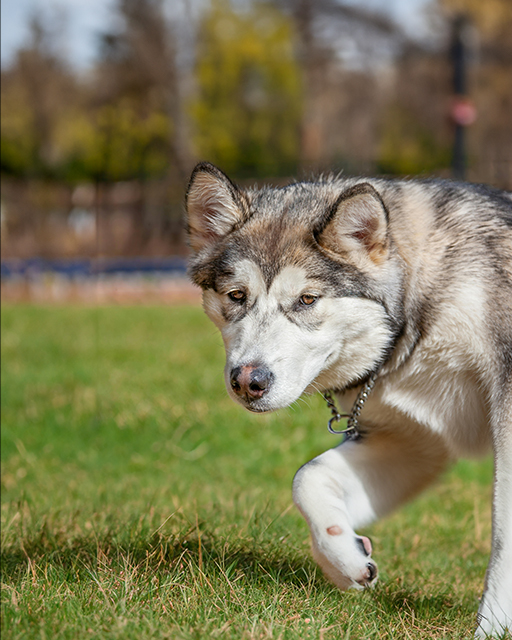

Bella - Labrador Retriever Mix
“I found Bella behind my house before a big snowstorm! I was able to use Syracuse Stray Compass to locate an open shelter with availability and get Bella a warm and safe place to stay before the snow came!” -Serena J.

Rocky - GSD/Husky Mix
“I adopted Rocky from Helping Hounds Rescue and he has been a phenomenal companion to me! He was brought into Helping Hounds through Syracuse Stray Compass and they were able to find him a warm bed to stay in until he could be adopted." -Ethan P.

Tyson - Boxer
“I found Tyson starving on the street, he kept almost getting hit by cars! I brought
him in and used Syracuse Stray Compass to learn the most responsible way to bring him into a shelter. I brought him to CNY SPCA and they scanned him for a microchip but didn’t find anything on him. I went back the next weekend and he was still there so I knew I had to bring him home with me through a formal adoption!” -Lucas R.
Lady - Husky
“Lady was found on the street hungry and thirsty during the middle of the summer. She was seen repeatedly by neighbors and kept being rehomed but then returned to the streets. I used Syraucse Stray Compass to learn the proper way to rescue her to make sure she was responsibly handled and she recently found her forever home!” -Maya T.